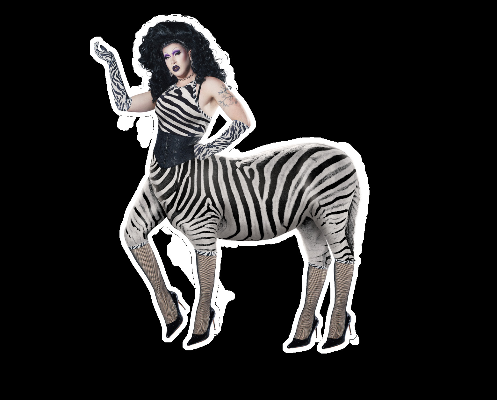
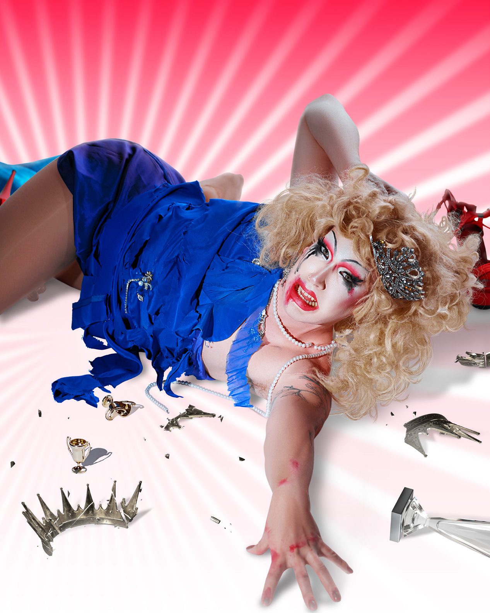
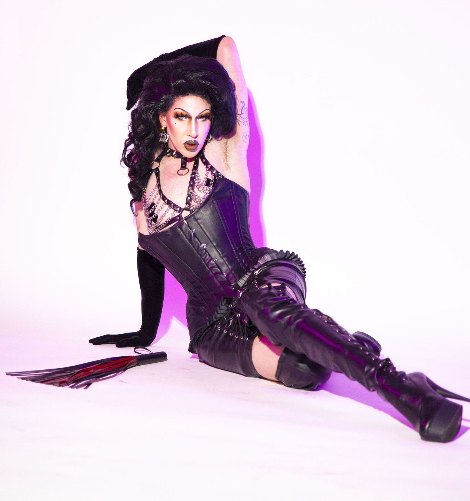

Drag
Miss Texas 1988

Currently you can find me rampaging around town in my Queen form Miss Texas 1988 or my King side JohnJacobJingleHeimerSH!T.
My recurring shows include:
TUSH · Clock-out Lounge · Cast
The Sunday Sip · Red Star Tacoma · Cast
Jawbreaker · Unicorn · Collective Member
Lashes · Unicorn · Cast
High F@ggotry · Unicorn · Host/Producer
Glory Hole · Various · Collective Member
When not at those locations, I've been spotted performing at Lumen Field, The Space Needle, Showbox Downtown and SODO, The Seattle Art Museum, and even as a painting at SeaTac Airport.
Oh! I also won a tv show. If you like dirt covered drag, check out Camp Wannakiki Season 5 on OutTV!
